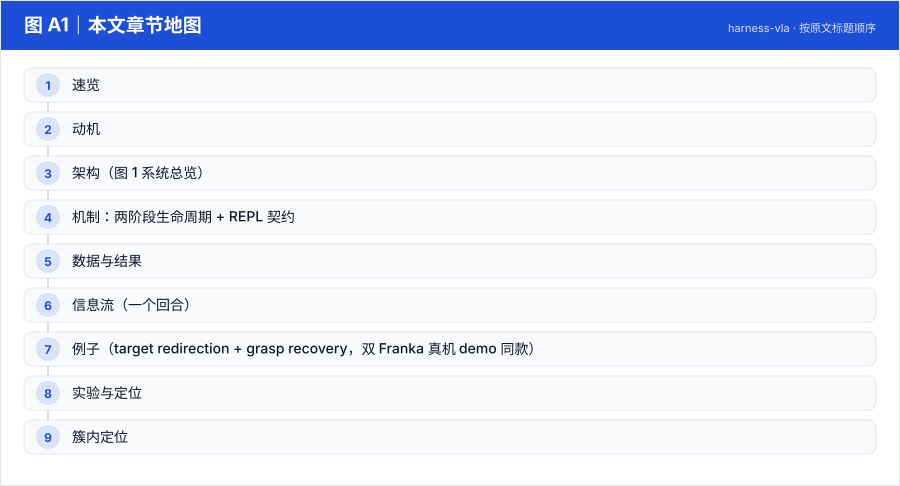
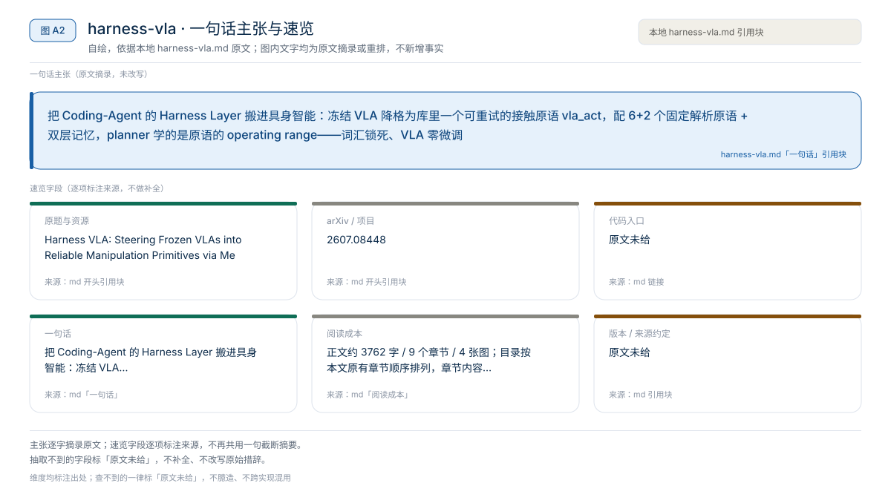
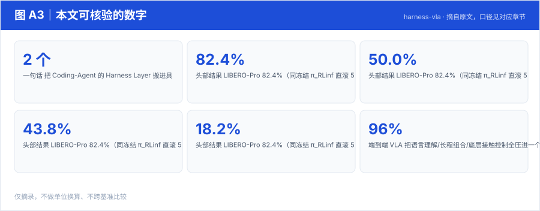
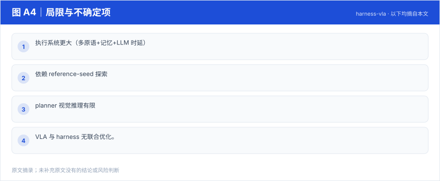

【Harness VLA · 代码即策略与技能发现】RAX 深读：把在线探索做成 Scaling Law，五大基准平均领先 37.4 个点
冻结通用 coding agent 直接连机器人感知/控制接口，把"在线探索"做成 scaling law：成功决策编译成程序、版本化入库，能力随探索预算单调增长
Harness01-代码即策略与技能发现2026
把 Coding-Agent 的 Harness Layer 搬进具身智能：冻结 VLA 降格为库里一个可重试的接触原语 vla_act，配 6+2 个固定解析原语 + 双层记忆，planner 学的是原语的 operating range——词汇锁死、VLA 零微调
原题与资源：Harness VLA: Steering Frozen VLAs into Reliable Manipulation Primitives via Memory-Guided Agents · arXiv:2607.08448
一句话：把 Coding-Agent 的 Harness Layer 搬进具身智能：冻结 VLA 降格为库里一个可重试的接触原语 vla_act，配 6+2 个固定解析原语 + 双层记忆，planner 学的是原语的 operating range——词汇锁死、VLA 零微调
阅读成本：正文约 3762 字 / 9 个章节 / 4 张图；目录按本文原有章节顺序排列，章节内容未改动。
目录（点击跳到对应章节）：

图 A1：本文章节地图（节点即原文 h2 标题）。自绘，依据本文，不新增事实。
| 项 | 内容 |
|---|---|
| 一句话 | 把 Coding-Agent 的 Harness Layer 搬进具身智能：冻结 VLA 降格为库里一个可重试的接触原语 vla_act，配 6+2 个固定解析原语 + 双层记忆，planner 学的是原语的 operating range——词汇锁死、VLA 零微调 |
| 冻结 | 底座 VLA（π_RLinf，flow-matching）+ planner（LLM） |
| 演化 | 无参数更新；探索期把成功轨迹与规则蒸馏进两块记忆 |
| 头部结果 | LIBERO-Pro 82.4%（同冻结 π_RLinf 直滚 50.0%；RATS 43.8%；Cap-X 18.2%） |
| 关键纪律 | planner 永不直接输出力矩/关节目标/action chunk——整个动作空间坍缩为封闭可审计的 JSON 契约 |

图 A2：一句话主张与速览字段。自绘，依据本文，不新增事实。

图 A3：本文可核验的数字摘录。自绘，依据本文，不新增事实。
一个具体任务走一遍 · 本文可核验数字与字段速查（以下均摘自原文，未作推算）：
固定原语库 P（评测前冻结，部署时不许新增）：
| 原语 | 类型 | 职责 |
|---|---|---|
| move_to / move_pose | 解析 | 自由空间运输 / 到位姿 |
| rotate_wrist / rotate_pitch | 解析 | 接触前姿态对齐 |
| set_gripper / release | 解析 | 夹爪开合 / 释放 |
| navigate_to / move_base（厨房扩展） | 解析 | 移动底盘 |
| vla_act | 冻结 VLA | 局部接触密集：抓、受限放置、按按钮、开抽屉 |
vla_act 契约：planner 给任务条件化 prompt + 提前返回谓词；冻结 VLA 输出 action chunk 直到谓词满足或预算耗尽。
两块记忆：
c_t = {action, args} → 引擎执行到原语 post-condition → 返回 o_{t+1}。借鉴 CodeAct/SWE-agent 的 REPL 运行时。| 基准 | Harness VLA | 对照 |
|---|---|---|
| LIBERO-Pro（8 cell × 100 trials） | 82.4%（Codex 版 72.1%） | 冻结 π_RLinf 50.0%；RATS 43.8%；Cap-X 18.2% |
| RoboCasa365 三子任务 | 60.0/21.3/5.0 → 91.6/56.3/15.0 | 整体约 55.4% |
| RoboTwin C2R（双臂 clean→randomized） | 58.4% | 直接策略 47.9% |
标准 LIBERO（成功率 %）
| 方法 | Spatial | Object | Goal | LIBERO-10 | Overall |
|---|---|---|---|---|---|
| OpenVLA | 84.7 | 88.4 | 79.2 | 53.7 | 76.5 |
| NORA | 85.6 | 89.4 | 80.0 | 63.0 | 79.5 |
| π0 | 96.8 | 98.8 | 95.8 | 85.2 | 94.2 |
| πRLinf | 99.0 | 96.0 | 97.0 | 89.0 | 95.3 |
| AtomVLA | 96.4 | 99.6 | 97.6 | 94.4 | 97.0 |
| Harness VLA (CC) | 97.0 | 100.0 | 94.0 | 93.0 | 96.0 |
LIBERO-Pro Overall（扰动基准，%）： OpenVLA 0.0 · π0 0.3 · π0.5 11.0 · MolmoAct 1.5 · X-VLA 3.8 · AtomVLA 6.3 · Cap-X 18.2 · RATS 43.8 · πRLinf 50.0 · Harness VLA (Codex) 72.1
RoboCasa365 Overall（%）： π0 14.8 · π0.5 16.9 · RLDX-1 30.0 · WorldDreamer 35.3 · HVLA(CC) 48.8 · HVLA(Codex) 57.2
Planner 消融（同一 harness 换规划器，LIBERO-Pro Overall）： Codex(GPT-5.5) 72.1 → Claude Code(Opus-4.7) 82.4 → Codex(GPT-6 Astra) 92.63——harness 增益随底座推理能力免费放大。
推理模式消融（LIBERO-Pro Overall / 单任务耗时）： reasoning high 78.5 @ 529s · no reasoning 62.5 @ 344s · Flash mode 72.63 @ 56s（≈9.4× 提速仅让 6 个点）。
ℓ + RGB-D + q_t ──▶ Planner（冻结 LLM）◀──检索── Task Memory / Global Memory
──▶ JSON 调用 c_t ∈ P ──▶ 物理引擎执行至 post-condition ──▶ o_{t+1}
循环至 G=True 或预算耗尽"把蓝色方块放到演示里的第二个目标位"（目标已位置交换）：re-ground 目标（解析原语读 RGB 定位"当前视觉里被指定的方块"）→ move_to 上方 → vla_act 抓（谓词=闭合且离地 2cm）→ Global Memory"空抓检测"判定失败 → move_pose re-stage 到有利观测位 → 再次调用 vla_act（把脆弱尝试重新框定）→ 成功后 move_to 目标位 → 放置 → release。
代码实证（官方 RPent 仓库）：rpent/tools/toolkit.py 的 Toolkit.execute_tool(name, input_dict) = 固定原语库 + JSON 契约；rpent/memory/manager.py 的 MemoryManager 用 SCOPES={"global","task-family"}、KINDS={"primitive","perception","strategy","failure","infra"} 实现两块记忆；仓库含 libero/robocasa/dual_franka/robotwin 后端。
本文判断：押注：不扩技能库，反而锁死词汇，让 planner 学会"何时、如何调用冻结 VLA"——把模型能力问题重述为模型如何被组织和调用的问题
局限与不确定项（以下均摘自本文，未作推断）：

图 A4：局限与不确定项摘录。自绘，依据本文，不新增事实。
覆盖范围：本页新增的导读、目录、章节地图、数字卡与局限清单，均为原文信息的重排或摘录；正文、数据与实验结论未改动。